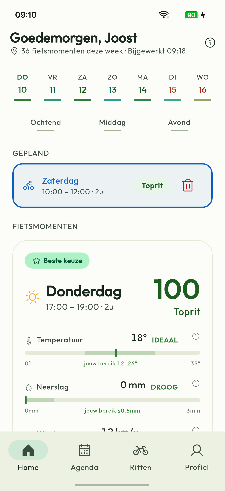

27-TEKSTEN.md op 2026-09-20, in D-12's prioriteitsvolgorde.
Dit venster is geopend vóór er om goedkeuring is gevraagd (D-05).
Hoi [naam], Je hebt al ja gezegd op het testen van Ridewindow — dit is geen nieuwe vraag, maar precies wat je nog moet doen om echt aangemeld te staan. Google telt namelijk alleen de laatste handeling zelf, en daar lijkt een aantal van jullie nog niet aan toegekomen: 1. Accepteer de uitnodiging voor de Google Groep (mail van Google Groups — check ook je spam als je hem niet ziet). 2. Open de opt-in-link terwijl je bent ingelogd op datzelfde Google-account waarmee je de groep hebt geaccepteerd: [opt-in-link]. 3. Druk op "Word tester" op de pagina die daarna verschijnt. Installeren is een aparte, latere stap — die telt niet mee als opt-in. Pas als deze drie stappen staan, sta je bij Google op de lijst, ook al heb je de app al geïnstalleerd. Waarom dit ertoe doet: Ridewindow is de app die ik zelf bouw om in één oogopslag te zien wanneer het deze week goed fietsweer is, afgestemd op je eigen agenda. Om productietoegang te krijgen bij Google moet de gesloten test veertien dagen achter elkaar minstens twaalf aangemelde testers hebben — wie tussentijds uitstapt breekt de reeks en de klok begint opnieuw. Dus: open de app die veertien dagen ook echt af en toe, niet alleen op dag één. Wat je terugkrijgt: meld je iets — een bug, een rare score, een tekst die niet klopt — dan hoor je van mij terug zodra het is opgelost, en in welke versie het zit. Eerste-minuut-tip: de app kan openen in de taal van je telefoon (dus Engels op een Engels toestel, ook als je zelf Nederlands leest) — dat zet je om in Profiel. En vul meteen een ruwe week beschikbaarheid in na het installeren, anders oogt het eerste scherm leeg.
Hoi allemaal, Ik ben Joost, fietser en developer, en ik bouw in mijn vrije tijd Ridewindow: een app die op basis van temperatuur, regen en wind uitrekent wanneer het deze week de beste momenten zijn om te fietsen, en dat naast je eigen agenda legt zodat je concrete, boekbare vensters krijgt in plaats van vaag advies — bijvoorbeeld "zaterdag 09:00–13:00, 4u, Perfect". (Geplaatst met toestemming van de beheerder/moderator van deze groep.) Ik zoek testers voor de gesloten testfase op Google Play. Wat ik vraag: installeer de app en open hem veertien dagen achter elkaar af en toe — niet alleen de eerste dag, want de test telt alleen mee als die reeks niet wordt onderbroken. Waarom: zonder mensen die de app ook echt gebruiken kan ik geen productietoegang aanvragen bij Google, en zonder echte fietsers weet ik niet of de score klopt buiten mijn eigen agenda. Wat je terugkrijgt: elke melding die je doet — een bug, een score die niet klopt, een tekst die onduidelijk is — hoor je van mij terug zodra die is opgelost, en in welke versie. Twee dingen vooraf: de app kan openen in de taal van je telefoon (dus Engels als je toestel op Engels staat) — dat zet je zelf om in Profiel. En vul na het installeren meteen een ruwe week beschikbaarheid in, anders oogt het eerste scherm leeg. Interesse? Reageer hieronder of stuur een bericht, dan stuur ik je de opt-in-link.

WebFetch op reddit.com/old.reddit.com werd geweigerd; de Claude-in-Chrome-extensie ook. Joost heeft zelf de regels geplakt: Regel 1 "Violation", Regel 2 "Sharing other subreddit link is prohibited" (bindt de tekst hieronder — geen andere subreddit genoemd), Regel 3 hate speech/harassment. Geen zelfpromotieregel gevonden — vastgelegd als "niet gevonden", niet als "toegestaan".
Tweede controleronde, opgelost: Joost laadde de feed zelf (~20 posts). Het account toont "Lid geworden" en een actieve "Post maken"-knop — Regel 1 is een regeltitel, geen banbanner. Het eerdere open risico is vervallen; alleen de standaard D-08-afspraak (opnieuw verifiëren bij verzending in Fase 30) blijft staan.
Gebruiken afgelezen uit de feed (geen geschreven regels, waargenomen patronen): wederkerigheid is de norm (test-for-test wordt bijna overal aangeboden); links staan in de posttekst zelf als genummerde 3-stappenlijst (groep joinen → opt-in op hetzelfde account → installeren); veertien dagen wordt altijd expliciet genoemd; geen publiek e-mailadres vragen en geen review-ruil aanbieden (beide worden afgekeurd); posts die met het ruilaanbod openen in plaats van met wat de app is, krijgen veel downvotes.
Ridewindow — a cycling app that scores upcoming hours for temperature, rain and wind and turns them into concrete, bookable ride windows against your own calendar (e.g. "Saturday 09:00–13:00, 4h — Perfect"). Looking for a few testers to help me clear Google's closed- testing requirement — happy to test back. 1. Join the Google Group: [group link] 2. Opt in using the SAME Google account as step 1, at: play.google.com/apps/testing/<id> 3. Install from: play.google.com/store/apps/details?id=<id> Joining the group alone does not opt you into the test — step 2 is the one Google actually counts. Please stay opted in for at least 14 consecutive days; the streak resets if the opted-in count drops below the required number mid-way. Happy to test yours back — tell me what you need (install + X days, or a specific flow to check) and I'll do it. Honest feedback only, no positive-review swaps. You'll hear back from me on anything you report — a bug, an odd score, unclear copy — once it's fixed, and which version it landed in. First-minute heads-up: the app may open in your phone's language (English, even if you'd expect Dutch) — switch it in Profile. Fill in a rough week of availability right after installing, otherwise the first screen looks empty. (Please don't post your Google account email publicly — DM me if needed.) Thanks!